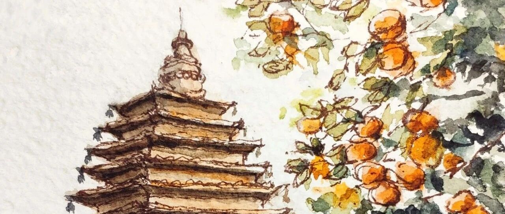

Autumn In Beijing.
PaintingDiary
2020年10月17日 21:32
在小说阅读器中沉浸阅读
今天北京天气太好了，
出去一趟不舍得回来，
又绕去附近的真觉寺溜达了一圈。
虽然大殿前面两棵近600岁的银杏还没有变成金色，
但是满园的柿子树已经让整个寺庙秋意甚浓了。
我决定过几天银杏变色的时候再来一次，
一定会很美很美。
我到的时候正好是中午，
人还比较少，
清清静静的院子，
阳光安静的落在每颗柿子上，
生机勃勃的柿子树和沉寂静谧的古寺佛塔，
那么和谐。
那一刻仿佛感到了一丝“禅意”。
就坐在柿子树下面的凉亭画下了这幅画。
不过之后2点钟的免费讲解开始后，
熙熙攘攘的人群，
让我又回到了现实，
果然这才是北京。。。
今天的一日游很惊喜，
上次有这种感觉还是在南锣鼓巷的齐白石故居，
也希望大家可以多多推荐北京附近好玩的地方给我～
欢迎点赞、评论、转发or给个“在看”～
晚安
～


 ～ ～
～ ～